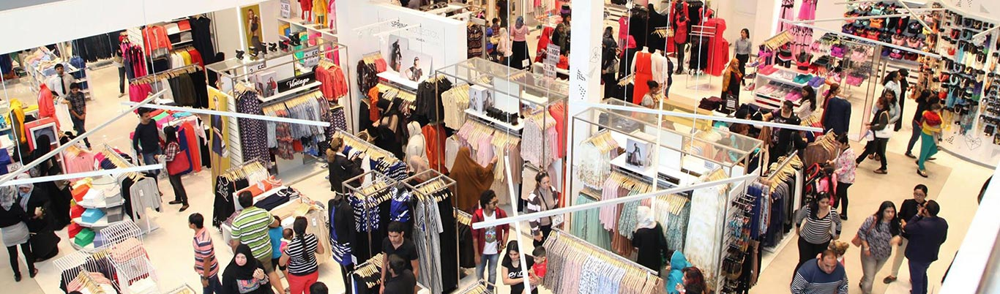

About Us Headquartered in Oman, AL-RAFIQ is the largest fashion retailer in the Middle East.
Part of the Landmark Group, AL-RAFIQ was founded in Muscat in 1993 and has since grown to over 200 stores across 14 countries worldwide.
Considered a trend-setter in the region, we boast an extensive, award-winning collection of popular clothing for women, men and teens. We are also the go-to destination for a gamut of international brands like Lee Cooper, Bossini, ELLE and Being Human.
We are a proud and active member of the Better Cotton Initiative (BCI). BCI is a non-profit organization that aims to reduce the environmental impact of cotton production and improve livelihoods and economies in cotton producing areas.
AL-RAFIQ Fashions has committed to 50% of its total cotton being more sustainably sourced (including BCI and organic) by 2020
|
Contact Us Phone number: +968 8754 6543 Email: marketing@al-rafiqfashiononline.com Website: www.al-rafiqfashiononline.com
|